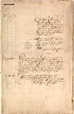
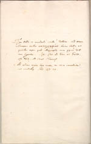
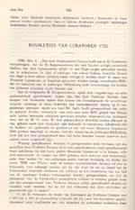

Justus Lipsius 1606 – 2006
Samenstelling: Jeanine de Landtsheer en A.Th. Bouwman
De webpresentatie behandelt de volgende onderwerpen:
1. Het Musaeum Lipsianum
Justus Lipsius liet bij zijn dood in 1606 een indrukwekkende verzameling gedrukte werken en manuscripten na aan zijn achterneefje Willem de Greve. Uiteindelijk bleef de bibliotheek evenwel in Antwerpen, bij Lipsius’ oud-leerling en executeur-testamentair Johannes Woverius. Via diens zoon kwam de dichter en diplomaat Constantijn Huygens in het bezit van een aanzienlijk deel van het Musaeum Lipsianum. Huygens liet in zijn testament vastleggen dat dit deel van zijn bibliotheek onverdeeld moest blijven. Na de dood van zijn kleinzoon werden de stukken in 1722 in Den Haag geveild en door Petrus Burman aangekocht voor de Leidse universiteit.
|
1.1 || ‘Catalogus librorum et codicum cum I. Lipsii notis ex
mandato Curatorum anno 1722 in auctione emptorum’. Manuscript. [Lips.
60]. –– Lijst van aanwinsten opgesteld door Petrus Burmannus (1668-1741) na aankoop van het Musaeum Lipsianum. |
|
|  | |
1.2 || Bundel originele brieven van Lipsius en kopieën van zijn hand. Manuscript. [Lips. 3: 8]. –– Op het schutblad noteerde Constantijn Huygens (1596-1687), een van de vroegere bezitters van het Musaeum Lipsianum, twee briefcitaten van Lipsius over diens onleesbare handschrift. |
|
|  | |
|
1.3 || P.C. Molhuysen, Bronnen tot de geschiedenis der Leidsche Universiteit, dl. IV (’s-Gravenhage 1920). [DOUSA 73 8516]. –– De resoluties van curatoren vermelden het voornemen tot aankoop van het Musaeum Lipsianum (9 maart 1722) en het verzoek van Burmannus om brieven van Lipsius te mogen uitgeven (1 februari 1723). |
|
|  | |
| vorige pagina | volgende pagina |